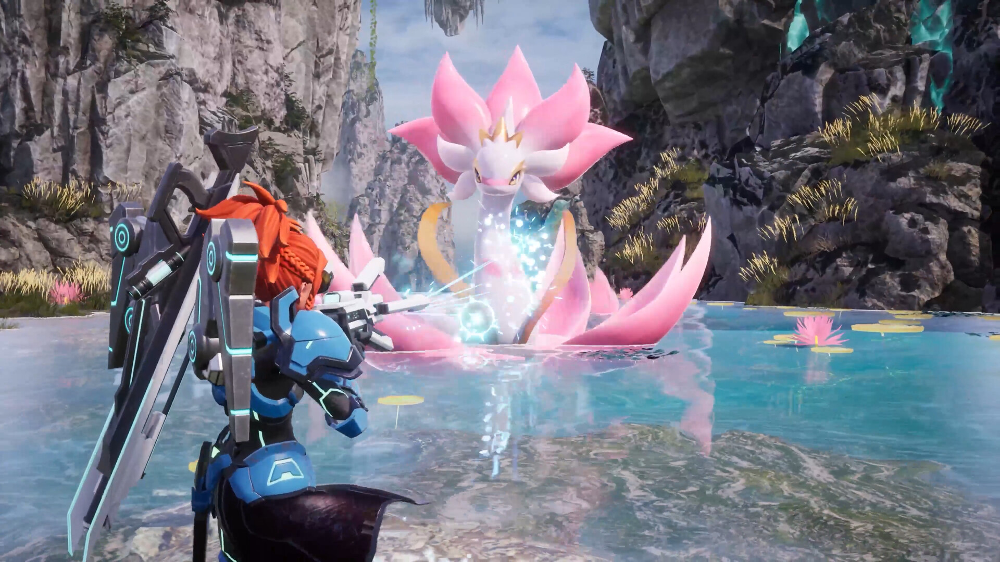
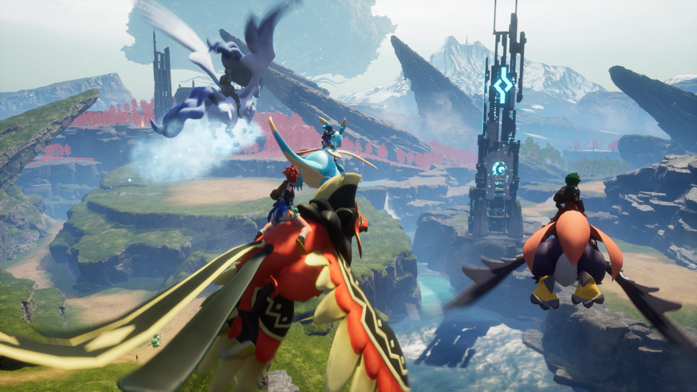

팰월드1.0 전투팰 고르는 기준, 속성 상성표부터 보고 가요
1.0 나오고 나서 팰 이것저것 잡으러 다니다 보면, 어느 순간부터 ‘이 팰 전투용으로 써도 되나’ 하는 고민이 따라붙더라고요. 저번에 상위권 팰 이름을 몇 개 정리해드렸는데, 정작 ‘그럼 뭘 기준으로 골라야 하나’는 따로 안 다뤘던 거 같아서요. 오늘은 순위 말고, 전투팰 고를 때 봐야 하는 기준 두 가지만 짚어볼게요.

전투 중 이런 장면, 한 번쯤은 보셨을 것 같아요.
전투팰 고를 때 뭐부터 봐야 하나요?
전투팰은 속성 상성이랑 파트너 스킬, 이 두 가지 기준으로 판단하면 됩니다. 속성 상성은 내가 데미지를 더 주느냐 덜 주느냐를 가르는 축인데요, 파트너 스킬은 그 팰이 전투에서 실제로 뭘 해주느냐(탑승 화력이냐, 버프냐, 아니면 전투랑 상관없는 운영용이냐)를 가르는 축이에요. 둘 다 봐야 ‘싸움 되는 팰’인지 감이 잡히는 거지, 속성만 좋다고 무조건 좋은 전투팰이 되는 건 아니더라고요.
상성이 유리하면 뜨는 데미지 숫자부터 확 달라지네요.
속성 상성표, 9개가 어떻게 갈리나요?
팰월드는 화염·물·번개·풀·땅·얼음·용·어둠·무속성 9개 속성이 서로 물고 물리는 한 방향 순환 구조로 짜여 있어요. 어렵게 들리는데요, 표로 보면 훨씬 간단하죠. 규칙은 딱 하나, 속성 하나마다 약점은 정확히 1개, 강점은 0~2개뿐입니다(화염만 예외로 강점이 2개예요). 그래서 그런지 초반에 화염 속성 팰로 전투를 익히면 상대적으로 이길 상황이 자주 나오는 편이더라고요, 유일하게 강점이 두 개라 유리하게 붙는 경우의 수가 하나 더 있는 셈이거든요.
| 속성 | 강한 상대(더 큰 피해) | 약한 상대(덜 먹임) |
|---|---|---|
| 화염 | 풀, 얼음 | 물 |
| 물 | 화염 | 번개 |
| 번개 | 물 | 땅 |
| 풀 | 땅 | 화염 |
| 땅 | 번개 | 풀 |
| 얼음 | 용 | 화염 |
| 용 | 어둠 | 얼음 |
| 어둠 | 무속성 | 용 |
| 무속성 | 없음 | 어둠 |
출처: 팰월드 위키(palworld.wiki.gg) 엘리먼트 문서 기준이고, 게임 자체 밸런스라 패치로 바뀌지 않는 이상 고정값이거든요.
이 표를 실전 데미지로 옮기면 이렇게 적용되는데요.
- 강한 상대를 때리면 2배 데미지가 들어가요.
- 약한 상대한테 맞으면 0.5배로 덜 들어가고, 반대로 내가 약점을 잡히면 나가는 데미지도 0.5배로 줄어요.
- 상성에 안 걸리면 그냥 1배죠.
- 팰이 자기 속성이랑 같은 속성 스킬을 쓰면 위 배율이랑 별개로 데미지가 20% 더 붙어요. 그래서 같은 속성 스킬을 챙기는 게 좋다고들 하죠.
외우기 헷갈리면 두 갈래로 나눠 보세요. ‘화염은 물한테, 물은 번개한테, 번개는 땅한테, 땅은 풀한테, 풀은 화염한테’ 약한 다섯 개짜리 순환 고리 하나랑, ‘얼음은 화염한테, 용은 얼음한테, 어둠은 용한테, 무속성은 어둠한테’ 약한 네 개짜리 곁가지 고리, 이 두 개만 기억하면 덜 헷갈려요.
파트너 스킬은 발동 방식이 왜 다른가요?
파트너 스킬은 탑승형·상시형·거점배치형, 이렇게 세 가지 방식 중 하나로 발동돼요.
- 탑승형 — 팰 등에 타야 효과가 나와요. 나이트윙(비행 탑승)이나 앞서 말씀드린 상위권 팰들처럼 이동이랑 전투를 같이 해결해주는 팰이 여기 속해요.
- 상시형 — 파티에 데리고만 있어도 계속 적용돼요. 까부냥의 ‘소지중량 +50’처럼 전투랑 직접 상관없는 것도 있고, 팰 공격력을 올려주는 상시형도 있어요.
- 거점배치형 — 거점에 배치해야 발동해요. 미호를 목장에 두면 자동으로 아이템을 캐주는 ‘여기를 파자’가 대표적인데, 이건 전투용이라기보단 운영용에 가까운 편이거든요.
확인하는 건 어렵지 않아요. Tab 키로 인벤토리를 열고 팰 목록에서 해당 팰을 선택하면 상세 정보 화면에 파트너 스킬 이름이랑 설명이 그대로 떠요. 설명 문구에 ‘탑승 중’, ‘보유하고 있는 동안’, ‘배치하면’ 중 뭐가 적혀 있는지만 보면 어느 유형인지 바로 판단됩니다.
발동 조건 문구만 확인해도 유형이 바로 갈리네요.
요즘 자주 언급되는 상위권 팰들은 속성이 뭔가요?
지금 커뮤니티에서 자주 꼽히는 제트래곤·팔라디우스·넵티오스·샤오롱, 이 네 마리는 속성이 다 다른데요. 제트래곤은 용, 팔라디우스는 무속성, 넵티오스는 물, 샤오롱은 물·용 복속성이에요.
| 팰 | 속성 | 파트너 스킬 특징 |
|---|---|---|
| 제트래곤(Jetragon) | 용 | 탑승형 · 공중 미사일 |
| 팔라디우스(Paladius) | 무속성 | 탑승형 · 트리플 점프 |
| 넵티오스(Neptilius) | 물 | 탑승형 · 수상 전투 |
| 샤오롱(Shaolong) | 물·용 | 탑승형 · Azure Sovereign(비행 탑승 + 파티 내 용 속성 팰 공격력 강화) · 천양향(선리치) 타워보스 유래 |
2026년 7월 기준으로 해외 공략 매체·커뮤니티에서 자주 이름이 오르는 팰들이에요.
네 마리 다 파트너 스킬이 탑승형이라는 공통점이 있는데, 지금 전투에서 ‘탑승 화력’이 그만큼 강하게 평가받고 있다는 뜻이기도 하죠. 왜 상위권으로 꼽히는지는 저번 글에서 다뤘으니 여기선 속성이랑 파트너 스킬 유형만 짚고 넘어갈게요.

탑승형 파트너 스킬 얘기가 나오면 이 장면부터 떠오르더라고요.
자주 묻는 질문
Q. 복속성 팰은 상성 계산이 어떻게 되나요?
두 속성을 다 물려받아요. 용·번개 복속성이면 어둠·물한테는 강하고 얼음·땅한테는 약한 식으로 상성이 그대로 겹쳐요. 다만 한쪽엔 강하고 다른 쪽엔 약한 스킬이 같이 들어오면 서로 상쇄돼서 1배로 처리됩니다. 만약 물·얼음처럼 강점 하나 약점 하나가 반대로 걸리는 복속성이 있다면, 화염 공격 하나로도 얼음 쪽은 강점(2배)·물 쪽은 약점(0.5배)이 동시에 걸려서 결국 평타 수준인 1배로 들어가는 셈이에요.
Q. 무속성 팰은 상성에서 불리한 건가요?
공격 쪽에서 유리한 상대가 없는 건 맞는데, 방어 쪽 약점은 어둠 하나뿐이라 다른 속성이랑 똑같아요. 손해 보는 속성이라기보단 상성 싸움을 잘 안 거는 속성에 가깝답니다. 그래서 팔라디우스처럼 무속성 상위권 팰을 굴릴 땐 상성으로 유리하게 붙으려 하기보다 파트너 스킬 자체의 기동성이나 화력으로 승부를 보는 편이 낫더라고요.
Q. 파트너 스킬 발동 방식이 세 가지보다 많다고 들었는데 맞나요?
맞아요. 탑승형·상시형·거점배치형 말고도 ‘함께 싸우는 동안’처럼 전투 중 조건부로 붙는 스킬, ‘발동하면’ 식으로 한 번 트리거되는 스킬도 있어요. 다만 전투팰 고를 때 실질적으로 갈리는 큰 갈래는 위 세 가지예요.
팰월드 전투팰 기준 정리
이 두 가지, 속성 상성이랑 파트너 스킬 발동 방식만 체크해도 전투팰 고르는 기준은 거의 다 잡힌다고 봐요. 상성표는 캡처해뒀다가 필요할 때마다 꺼내 보시고, 파트너 스킬은 Tab 눌러서 직접 확인하는 습관만 들이면 순위 얘기에 휘둘리지 않고 내 파티에 맞는 팰을 고를 수 있을 거예요.
✔ 팰월드 같이 보기 좋은 내용
· 팰월드1.0 전투팰 티어 지금 이렇게 갈리고 있어요 (발행 시 링크 연결)
· 팰월드1.0 패시브스킬 특성 조합 추천, 교배 공식부터 달라졌어요 (발행 시 링크 연결)
· 팰월드1.0 신규팰72종 서식지 정리, 선리치랑 세계수부터 가보세요 (발행 시 링크 연결)
참고한 곳
· 팰월드 위키(palworld.wiki.gg) – Elements
· 팰월드 데이터베이스(paldb.cc) – 파트너 스킬